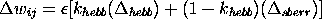

The pseudocode for Leabra is given here, showing exactly how the pieces of the algorithm described in more detail in the subsequent sections fit together.
Iterate over minus and plus phases of settling for each event.
o At start of settling, for all units:
- Initialize all state variables (activation, v_m, etc).
- Apply external patterns (clamp input in minus, input & output in
plus).
- Compute net input scaling terms (constants, computed
here so network can be dynamically altered).
- Optimization: compute net input once from all static activations
(e.g., hard-clamped external inputs).
o During each cycle of settling, for all non-clamped units:
- Compute excitatory netinput (g_e(t), aka eta_j or net)
-- sender-based optimization by ignoring inactives.
- Compute kWTA inhibition for each layer, based on g_i^Q:
* Sort units into two groups based on g_i^Q: top k and
remaining k+1 -> n.
* If basic, find k and k+1th highest
If avg-based, compute avg of 1 -> k & k+1 -> n.
* Set inhibitory conductance g_i from g^Q_k and g^Q_k+1
- Compute point-neuron activation combining excitatory input and
inhibition
o After settling, for all units, record final settling activations
as either minus or plus phase (y^-_j or y^+_j).
After both phases update the weights (based on linear current
weight values), for all connections:
o Compute error-driven weight changes with soft weight bounding
o Compute Hebbian weight changes from plus-phase activations
o Compute net weight change as weighted sum of error-driven and Hebbian
o Increment the weights according to net weight change.
Default parameter values: Parameter | Value | Parameter | Value -------------------------------------------- E_l | 0.15 | gbar_l | 0.10 E_i | 0.15 | gbar_i | 1.0 E_e | 1.00 | gbar_e | 1.0 V_rest | 0.15 | Theta | 0.25 tau | .02 | gamma | 600 k_hebb | .02 | epsilon | .01
Leabra uses a point neuron activation function that models the electrophysiological properties of real neurons, while simplifying their geometry to a single point. This function is nearly as simple computationally as the standard sigmoidal activation function, but the more biologically-based implementation makes it considerably easier to model inhibitory competition, as described below. Further, using this function enables cognitive models to be more easily related to more physiologically detailed simulations, thereby facilitating bridge-building between biology and cognition.
The membrane potential V_m is updated as a function of ionic
conductances g with reversal (driving) potentials E as
follows:
with 3 channels (c) corresponding to: e excitatory input; l leak current; and i inhibitory input. Following electrophysiological convention, the overall conductance is decomposed into a time-varying component g_c(t) computed as a function of the dynamic state of the network, and a constant gbar_c that controls the relative influence of the different conductances. The equilibrium potential can be written in a simplified form by setting the excitatory driving potential (E_e) to 1 and the leak and inhibitory driving potentials (E_l and E_i) of 0:
which shows that the neuron is computing a balance between excitation and the opposing forces of leak and inhibition. This equilibrium form of the equation can be understood in terms of a Bayesian decision making framework (O'Reilly & Munakata, 2000).
The excitatory net input/conductance g_e(t) or eta_j is computed as the proportion of open excitatory channels as a function of sending activations times the weight values:
= 1/n sum_i x_i w_ij ">The inhibitory conductance is computed via the kWTA function described in the next section, and leak is a constant.
Activation communicated to other cells (y_j) is a thresholded (Theta) sigmoidal function of the membrane potential with gain parameter gamma:
where [x]_+ is a threshold function that returns 0 if x<0 and x if X>0. Note that if it returns 0, we assume y_j(t) = 0, to avoid dividing by 0. As it is, this function has a very sharp threshold, which interferes with graded learning learning mechanisms (e.g., gradient descent). To produce a less discontinuous deterministic function with a softer threshold, the function is convolved with a Gaussian noise kernel (\mu=0, \sigma=.005), which reflects the intrinsic processing noise of biological neurons:
where x represents the [V_m(t) - \Theta]_+ value, and y^*_j(x) is the noise-convolved activation for that value. In the simulation, this function is implemented using a numerical lookup table.
Leabra uses a kWTA (k-Winners-Take-All) function to achieve inhibitory competition among units within a layer (area). The kWTA function computes a uniform level of inhibitory current for all units in the layer, such that the k+1th most excited unit within a layer is generally below its firing threshold, while the kth is typically above threshold. Activation dynamics similar to those produced by the kWTA function have been shown to result from simulated inhibitory interneurons that project both feedforward and feedback inhibition (OReilly & Munakata, 2000). Thus, although the kWTA function is somewhat biologically implausible in its implementation (e.g., requiring global information about activation states and using sorting mechanisms), it provides a computationally effective approximation to biologically plausible inhibitory dynamics.
kWTA is computed via a uniform level of inhibitory current for all units in the layer as follows:
where 0<q<1 (.25 default used here) is a parameter for setting the inhibition between the upper bound of g^Theta_k and the lower bound of g^Theta_k+1. These boundary inhibition values are computed as a function of the level of inhibition necessary to keep a unit right at threshold:
where g^*_e is the excitatory net input without the bias weight contribution -- this allows the bias weights to override the kWTA constraint.
In the basic version of the kWTA function, which is relatively rigid about the kWTA constraint and is therefore used for output layers, g^Theta_k and g^Theta_k+1 are set to the threshold inhibition value for the kth and k+1th most excited units, respectively. Thus, the inhibition is placed exactly to allow k units to be above threshold, and the remainder below threshold. For this version, the q parameter is almost always .25, allowing the kth unit to be sufficiently above the inhibitory threshold.
In the average-based kWTA version, g^Theta_k is the average g_i^Theta value for the top k most excited units, and g^Theta_k+1 is the average of g_i^Theta for the remaining n-k units. This version allows for more flexibility in the actual number of units active depending on the nature of the activation distribution in the layer and the value of the q parameter (which is typically .6), and is therefore used for hidden layers.
For learning, Leabra uses a combination of error-driven and Hebbian learning. The error-driven component is the symmetric midpoint version of the GeneRec algorithm (O'Reilly, 1996), which is functionally equivalent to the deterministic Boltzmann machine and contrastive Hebbian learning (CHL). The network settles in two phases, an expectation (minus) phase where the network's actual output is produced, and an outcome (plus) phase where the target output is experienced, and then computes a simple difference of a pre and postsynaptic activation product across these two phases. For Hebbian learning, Leabra uses essentially the same learning rule used in competitive learning or mixtures-of-Gaussians which can be seen as a variant of the Oja normalization (Oja, 1982). The error-driven and Hebbian learning components are combined additively at each connection to produce a net weight change.
The equation for the Hebbian weight change is:
and for error-driven learning using CHL:
which is subject to a soft-weight bounding to keep within the 0-1 range:
The two terms are then combined additively with a normalized mixing constant k_hebb:
The Leabra implementation defines a full range of specialized network objects, from connections through layers. Unlike most PDP++ simulations, Leabra makes extensive use of the LayerSpec type, specifically the LeabraLayerSpec, which specifies the k-winners-take-all inhibition.
The new schedule process objects consist of three essential levels of processing, starting at the trial level and moving down through settling to the cycle, which implements one activation update of the network. Thus, the LeabraTrial process loops over the plus and minus phases of settling in the LeabraSettle process, which in turn iterates over cycles of the LeabraCycle process, which updates the activations of the units in the network.